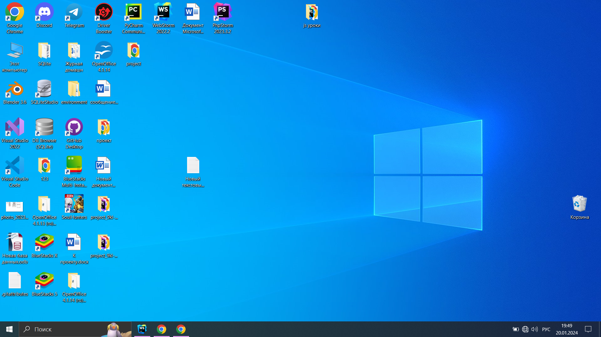
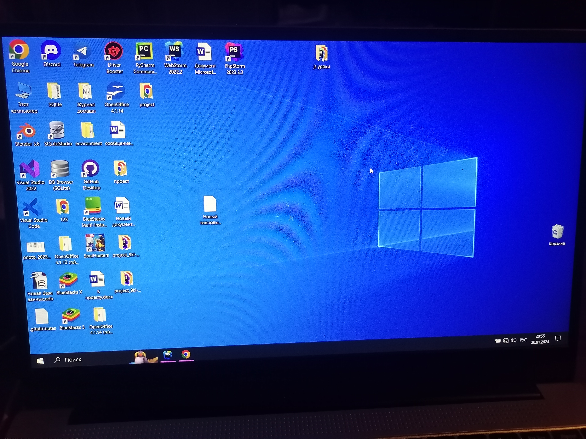

Скриншоты
Если коротко, то скриншот - это снимок экрана. Бывает такие моменты когда надо показать экран
телефона или ПК, и не все знают как правильно сделать.
Сравните два примера ниже. Какой по вашему мнению выглядит привлекательно?
- Скриншот с ноутбука(ПК)

- Скриншот с телефона

Выберите какая картинка лучше ->
Для того чтобы сделать скриншот на ПК, следуйте следующей инструкции:
- В правой верхней части клавиатуры найдите и нажмите 1 раз кнопку Prt Src (или Prt
Sc)
Если у вас Prt Src, находится на F клавише, то зажмите Fn и нажмите на клавишу с текстом Prt Src.
- Чтобы посмотреть картинку, вы можете вставить его куда-нибудь, например в Word
или Paint.
Картинку можно вставить с помощью горячих клавиш, а
именно Ctrl + V.
- Вставьте в поле ниже, картинку(Ctrl + V или правая кнопка мыши,
вставка):